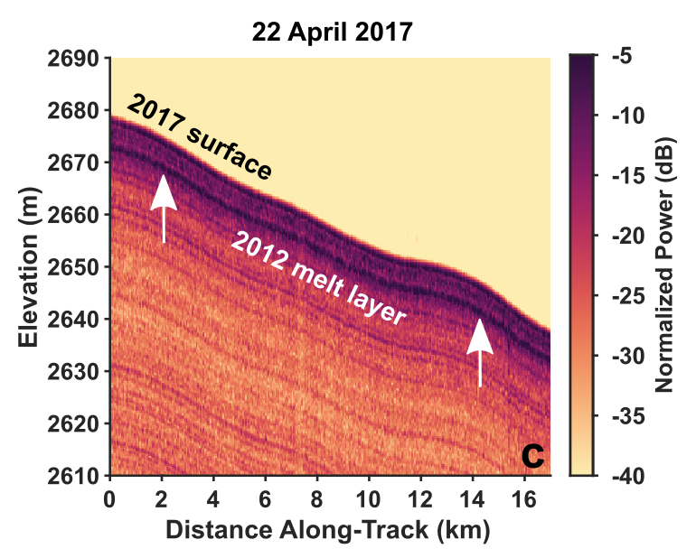

Ice-Sheet Hydrology
Over the last two decades, around 55% of mass loss from the Greenland Ice Sheet has come from the runoff of surface meltwater, with the remainder driven by ice dynamics. Observations and regional climate models also show a long-term increase in the area of the ice sheet experiencing surface melt, the maximum elevation of where melting occurs, and the total length of the annual melt season. Therefore, understanding how much and how quickly surface meltwater can be transported through the supraglacial and englacial hydrologic systems and how those systems are evolving with time is critical for assessing current and future sea level contributions from the Greenland Ice Sheet.
Recent Publications
-
 Extreme Melt Season Ice Layers Reduce Firn Permeability Across Greenland (Nature Communications, 2021)
The 2012 extreme melt season formed an extensive refrozen melt layer in Greenland's firn. We map the extent and density of this layer, relate its formation to local climate and weather conditions, and show that the melt layer can limit vertical drainage pathways. Our results suggest that the frequency of extreme melt events may be a key determinant of the ice sheet's response to future surface melt.